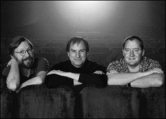

Ed Catmull, Steve Jobs, and John Lasseter, 1999
When Jobs was losing his footing at Apple in the summer of 1985, he went for a walk with Alan Kay, who had been at Xerox PARC and was then an Apple Fellow. Kay knew that Jobs was interested in the intersection of creativity and technology, so he suggested they go see a friend of his, Ed Catmull, who was running the computer division of George Lucas’s film studio. They rented a limo and rode up to Marin County to the edge of Lucas’s Skywalker Ranch, where Catmull and his little computer division were based. “I was blown away, and I came back and tried to convince Sculley to buy it for Apple,” Jobs recalled. “But the folks running Apple weren’t interested, and they were busy kicking me out anyway.”
1985年夏天，乔布斯在苹果公司正处于失势中。一天，他和艾伦・凯一起散步，凯曾在施乐PARC工作，当时是苹果公司职员。凯知道，乔布斯对创意与技术的交融很感兴趣，于是建议他一同拜访自己的朋友埃德・卡特穆尔（EdCatmull）。卡特穆尔当时是乔治・卢卡斯（GeorgeLucas）电影制片厂电脑部门的负责人。乔布斯他们租了一辆豪华轿车，驾车前往马林郡，来到卢卡斯天行者牧场（SkywalkerRanch）的边上，卡特穆尔及其电脑部门就在这里。“我感到很震撼，回公司以后就试图说服斯卡利把它收购下来。”乔布斯回忆道，“但是管理苹果公司的那帮家伙对此不感兴趣，而且他们正忙着把我赶出去。”
The Lucasfilm computer division made hardware and software for rendering digital images, and it also had a group of computer animators making shorts, which was led by a talented cartoon-loving executive named John Lasseter. Lucas, who had completed his first Star Wars trilogy, was embroiled in a contentious divorce, and he needed to sell off the division. He told Catmull to find a buyer as soon as possible.
卢卡斯影业电脑部门有两个主要组成部分：一个团队研发定制电脑，使之能够将实景电影胶片上的图像数字化，并融入酷炫的特效；还有一个电脑动画团队制作动画短片，如《安德烈与沃利历险记》（TheAdventuresofAndréandWallyB.）这部动画片在1984年的一次行业大会上展出，令其导演约翰・拉塞特（JohnLasseter）声名大噪。卢卡斯当时已经完成了他的《星球大战》（StarWars）三部曲的第一部，正陷入一场争吵不断的离婚案中，他需要卖掉这个电脑部门。卢卡斯叫卡特穆尔尽快找到买家。
After a few potential purchasers balked in the fall of 1985, Catmull and his colleague Alvy Ray Smith decided to seek investors so that they could buy the division themselves. So they called Jobs, arranged another meeting, and drove down to his Woodside house. After railing for a while about the perfidies and idiocies of Sculley, Jobs proposed that he buy their Lucasfilm division outright. Catmull and Smith demurred: They wanted an investor, not a new owner. But it soon became clear that there was a middle ground: Jobs could buy a majority of the division and serve as chairman but allow Catmull and Smith to run it.
1985年秋，在一些潜在买家都��躇不决时，卡特穆尔和联合创始人阿尔维・雷・史密斯（AlvyRaySmith）决定自己买下这个部门并寻找投资者。于是，他们打电话找到乔布斯，又安排了一次会面，两人驱车前往乔布斯位于伍德赛德的家中。乔布斯先是抱怨了一通斯卡利的愚蠢和背信弃义，然后提议自己全资买下卢卡斯影业的电脑部门。卡特穆尔和史密斯拒绝了。他们想要一位主要投资者而不是一个新的所有者。不过很快就有了一个折中办法：乔布斯出资购买多数股权，并担任董事长，但由卡特穆尔和史密斯来运营。
“I wanted to buy it because I was really into computer graphics,” Jobs recalled. “I realized they were way ahead of others in combining art and technology, which is what I’ve always been interested in.” He offered to pay Lucas $5 million plus invest another $5 million to capitalize the division as a stand-alone company. That was far less than Lucas had been asking, but the timing was right. They decided to negotiate a deal.
“我之所以想收购这个部门，是因为我真的很喜欢计算机图形。”乔布斯后来回忆道，“看到卢卡斯影业电脑部门这些人的时候，我意识到，在融合艺术与技术的领域，他们走在了其他人前面，而这个领域一直都是我的兴趣所在。”乔布斯知道，在未来数年里，计算机将会比现在强大上百倍，他相信这会给动画和逼真的3D图形带来巨大进步。“卢卡斯团队正在研究的问题需要非常强大的计算处理能力，这使我意识到他们必将引领历史。我喜欢这样的发展方向。”
The chief financial officer at Lucasfilm found Jobs arrogant and prickly, so when it came time to hold a meeting of all the players, he told Catmull, “We have to establish the right pecking order.” The plan was to gather everyone in a room with Jobs, and then the CFO would come in a few minutes late to establish that he was the person running the meeting. “But a funny thing happened,” Catmull recalled. “Steve started the meeting on time without the CFO, and by the time the CFO walked in Steve was already in control of the meeting.”
乔布斯提出的条件是，向卢卡斯支付500万美元，然后自己再投入500万美元，从而将这一部门变成独立的公司。这比卢卡斯一直以来所要求的金额低得多，然而时机对乔布斯来说却刚刚好。于是，双方决定通过谈判达成交易。卢卡斯影业的CFO发现乔布斯傲慢又易怒，在谈判各方即将举行会谈时，这位CFO对卡特穆尔说：“我们必须建立正确的等级次序。”他的计划是，将所有人和乔布斯都聚集在一间会议室里，然后这位CFO晚到几分钟，以表明他才是主持会议的人。“但是有趣的事情发生了，”卡特穆尔回忆说，“史蒂夫在CFO缺席的情况下按时开始了这次会议，而当那位CFO走进来时，史蒂夫已经掌握了会议的控制权。”
Jobs met only once with George Lucas, who warned him that the people in the division cared more about making animated movies than they did about making computers. “You know, these guys are hell-bent on animation,” Lucas told him. Lucas later recalled, “I did warn him that was basically Ed and John’s agenda. I think in his heart he bought the company because that was his agenda too.”
乔布斯只见过乔治・卢卡斯一面，卢卡斯警告他说，比起做电脑，这个部门的人更关心制作动画电影。“你知道，这些家伙都是在拼命做动画。”卢卡斯对乔布斯说。卢卡斯后来回忆表示：“我确实警告过他，这个部门基本是按埃德和约翰的计划来开展工作的。我觉得在他看来，买下这家公司是因为它也符合他自己的计划。”
The final agreement was reached in January 1986. It provided that, for his $10 million investment, Jobs would own 70% of the company, with the rest of the stock distributed to Ed Catmull, Alvy Ray Smith, and the thirty-eight other founding employees, down to the receptionist. The division’s most important piece of hardware was called the Pixar Image Computer, and from it the new company took its name.
1986年1月，他们达成了最终协议。协议约定，乔布斯投资1000万美元后，可持有该公司70%的股份，其他股份分配给埃德・卡特穆尔、阿尔维・雷・史密斯及其他38名创始员工，包括前台接待。该部门最重要的硬件是皮克斯图像电脑（PixarImagesComputer），新公司便以此命名。最后的问题就是在哪里签合同，乔布斯想在自己位于NeXT的办公室，而卢卡靳影业的人想在天行者牧场。最后，双方都作出了妥协，在旧金山一家律师事务所会面。
For a while Jobs let Catmull and Smith run Pixar without much interference. Every month or so they would gather for a board meeting, usually at NeXT headquarters, where Jobs would focus on the finances and strategy. Nevertheless, by dint of his personality and controlling instincts, Jobs was soon playing a stronger role. He spewed out a stream of ideas―some reasonable, others wacky―about what Pixar’s hardware and software could become. And on his occasional visits to the Pixar offices, he was an inspiring presence. “I grew up a Southern Baptist, and we had revival meetings with mesmerizing but corrupt preachers,” recounted Alvy Ray Smith. “Steve’s got it: the power of the tongue and the web of words that catches people up. We were aware of this when we had board meetings, so we developed signals―nose scratching or ear tugs―for when someone had been caught up in Steve’s distortion field and he needed to be tugged back to reality.”
有那么一段时间，乔布斯没有进行过多干预，让卡特穆尔和史密斯自行掌管皮克斯。每隔一个月左右，他们就会进行一次董事会会议，通常是在NeXT的总部，乔布斯主要关注财务和战略。然而，由于个性使然以及控制本能的驱使，乔布斯很快就变成了强势的角色，显然比卡特穆尔和史密斯预想的更为强势。针对皮克斯公司硬件和软件的未来，他提出了一堆想法，有的合理，有的古怪。而他虽然只是偶尔前往皮克斯的办公室，但每次出现他都能让人心潮澎湃。“我从小就加入了美南浸信会（SouthernBaptist），我们经常同那些生活腐化但却极具蛊惑力的牧师们一起开培灵会。”阿尔维・雷・史密斯说，“史蒂夫显然精于此道，深知口舌的力量和语言的网络能让人陷进去。开董事会会议的时候，大家意识到了这个问题，于是我们发展出一套信号――抓凫子或拽耳朵，如果有人陷入了史蒂夫的现实扭曲力场，需要被拉回现实，我们就会使用这个信号。”
Jobs had always appreciated the virtue of integrating hardware and software, which is what Pixar did with its Image Computer and rendering software. It also produced creative content, such as animated films and graphics. All three elements benefited from Jobs’s combination of artistic creativity and technological geekiness. “Silicon Valley folks don’t really respect Hollywood creative types, and the Hollywood folks think that tech folks are people you hire and never have to meet,” Jobs later said. “Pixar was one place where both cultures were respected.”
乔布斯一直都很欣赏硬件和软件的整合，皮克斯的图像电脑和渲染软件就是如此。事实上，皮克斯还拥有另一个要素：它制作出色的内容，如动画电影和图像。这三种要素都得益于乔布斯将艺术创意和技术的结合。“硅谷的人并不尊重好莱坞的创意特质，而好莱坞的人则认为技术人员是那些只需雇用而无需见面的人。”乔布斯后来说道，“皮克斯则同时尊重好莱鸟和硅谷的文化。”
Initially the revenue was supposed to come from the hardware side. The Pixar Image Computer sold for $125,000. The primary customers were animators and graphic designers, but the machine also soon found specialized markets in the medical industry (CAT scan data could be rendered in three-dimensional graphics) and intelligence fields (for rendering information from reconnaissance flights and satellites). Because of the sales to the National Security Agency, Jobs had to get a security clearance, which must have been fun for the FBI agent assigned to vet him. At one point, a Pixar executive recalled, Jobs was called by the investigator to go over the drug use questions, which he answered unabashedly. “The last time I used that . . . ,” he would say, or on occasion he would answer that no, he had actually never tried that particular drug.
最初，皮克斯公司希望硬件能带来收入。皮克斯图像电脑售价12.5万美元，主要购买者是动画师和平面设计师，不过这款电脑也在医疗行业和情报领域找到了特殊市场。（医疗CAT扫描数据能够被转换成三维图形；来自侦察飞机和卫星的信息也能通过该款电脑进行转换。）由于要销售给美国国家安全局，乔布斯必须接受安全调查，对于被指派来调查他的FBI（美国联邦调查局）特工来说一定感觉有趣极了。据一位皮克斯�{管讲述，有一次，调查员打来电话询问毒品使用问题，乔布斯如实回答，丝毫不加掩饰。他会说“我上回用这种毒品是在……”，偶尔他也会回答不，他从未用过那种毒品。
Jobs pushed Pixar to build a lower-cost version of the computer that would sell for around $30,000. He insisted that Hartmut Esslinger design it, despite protests by Catmull and Smith about his fees. It ended up looking like the original Pixar Image Computer, which was a cube with a round dimple in the middle, but it had Esslinger’s signature thin grooves.
乔布斯要求皮克斯开发一款成本更低的图像电脑，售价在3万美元左右。他坚持由哈特穆特・艾斯林格进行设计，尽管卡特穆尔和史密斯对其收费价格表示反对。最后，这款新电脑跟皮克斯图像电脑很相似，是一个立方体，中间有一处圆形凹陷，但带有艾斯林格招牌式的纤细纹路。
Jobs wanted to sell Pixar’s computers to a mass market, so he had the Pixar folks open up sales offices―for which he approved the design―in major cities, on the theory that creative people would soon come up with all sorts of ways to use the machine. “My view is that people are creative animals and will figure out clever new ways to use tools that the inventor never imagined,” he later said. “I thought that would happen with the Pixar computer, just as it did with the Mac.” But the machine never took hold with regular consumers. It cost too much, and there were not many software programs for it.
乔布斯想要把皮克斯的电脑卖给大众市场，于是他让皮克斯的人员在各大城市开辟销售办事处，办事处的设计由他本人审核通过。他的想法是，有创意的人很快会想到使用这款电脑的各种方法。“我认为，人是创造性动物，面对工具，他们能想出发明者未曾想过的各种聪明的使用方法，”乔布斯后来说道，“我觉得这会同样适用于皮克斯电脑，就像Mac―样。”但是，皮克斯电脑从未完全进入普通消费者市场。它们售价太�{，专门为之编写的软件应用程序也不多。
On the software side, Pixar had a rendering program, known as Reyes (Renders everything you ever saw), for making 3-D graphics and images. After Jobs became chairman, the company created a new language and interface, named RenderMan, that it hoped would become a standard for 3-D graphics rendering, just as Adobe’s PostScript was for laser printing.
在软件方面，皮克斯有一个渲染程序，名为雷耶斯（Reyes，RendersEverythingYouEverSaw），意为渲染你所见的一切，用于制作3D图形和图像。乔布斯担任董事长后，皮克斯开发了一种新语言和界面，名为RenderMan。他们期望这款软件能够成为3D图形渲染领域的标准，就像Adobe公司的PostScript①之于激光打印那样。
As he had with the hardware, Jobs decided that they should try to find a mass market, rather than just a specialized one, for the software they made. He was never content to aim only at the corporate or high-end specialized markets. “He would have these great visions of how RenderMan could be for everyman,” recalled Pam Kerwin, Pixar’s marketing director. “He kept coming up with ideas about how ordinary people would use it to make amazing 3-D graphics and photorealistic images.” The Pixar team would try to dissuade him by saying that RenderMan was not as easy to use as, say, Excel or Adobe Illustrator. Then Jobs would go to a whiteboard and show them how to make it simpler and more user-friendly. “We would be nodding our heads and getting excited and say, ‘Yes, yes, this will be great!’” Kerwin recalled. “And then he would leave and we would consider it for a moment and then say, ‘What the heck was he thinking!’ He was so weirdly charismatic that you almost had to get deprogrammed after you talked to him.” As it turned out, average consumers were not craving expensive software that would let them render realistic images. RenderMan didn’t take off.
乔布斯认为，皮克斯的软件也应该像硬件那样，尝试进入大众市场，而不是仅限于专业市场。只针对企业市场或�{端专业市场的做法，他从来都没兴趣。“他非常沉迷于大众市场产品，”帕姆・克尔温（PamKerwin）说，她是皮克斯的营销总监，“他会构造一些宏大的愿景，想象RenderMan能够怎样为所有人服务。他在会议中不断产生新想法，设想普通用户将如何用它做出惊人的3D图形和逼真的图像。”皮克斯团队试图劝阻他，他们认为RenderMan并不像Excel或AdobeIllustrator那样易于使用。这时，乔布斯就会走到一块白板前，告诉他们如何把它做得更简单，更便于使用。“我们不禁频频点头，兴奋地说：‘是的，是的，这样很棒！’”克尔温回忆说，“等他走了以后，我们又考虑了一会儿，觉得‘他想的都是些什么鬼主意！’他身上的奇特魅力实在是强大，你和他交谈之后就几乎被洗脑了。”后来事实证明，普通消费者对于这种能让他们渲染出逼真图像的昂贵软件并无兴趣。RenderMan没有成功进入大众市场。
There was, however, one company that was eager to automate the rendering of animators’ drawings into color images for film. When Roy Disney led a board revolution at the company that his uncle Walt had founded, the new CEO, Michael Eisner, asked what role he wanted. Disney said that he would like to revive the company’s venerable but fading animation department. One of his first initiatives was to look at ways to computerize the process, and Pixar won the contract. It created a package of customized hardware and software known as CAPS, Computer Animation Production System. It was first used in 1988 for the final scene of The Little Mermaid, in which King Triton waves good-bye to Ariel. Disney bought dozens of Pixar Image Computers as CAPS became an integral part of its production.
不过，倒是有一家企业渴望将动画师的绘画自动渲染成彩色图像用于电影拍摄。罗伊・迪士尼（RoyDisney）在迪士尼公司发动了一场董事会革命，他是该公司创始人沃尔特・迪士尼的侄子。迪士尼公司的新任CEO迈克尔・艾斯纳（MichaelEisner）问罗伊想要担任什么角色，罗伊表示他想要重振公司历史悠久却日渐衰落的动画部门。他的首轮举措之一就是设法将动画流程计算机化，而皮克斯赢得了迪士尼的这份合同。皮克斯为迪士尼量身定做了一款软硬件套装，名为CAPS,即电脑动画制作系统（ComputerAnimationProductionSystem）。1988年，这套设备首次投入使用，负责制作动画片《小美人鱼》（TheLittleMermaid）中的最后一幕――国王特里同挥别爱丽儿。在此之后，CAPS就成了迪士尼极为依赖的设备，迪士尼为此又购买了数十台皮克斯图像电脑――
注释：
①PostScript是一种主要用于电子产业和桌面出版领域的页面描述语言和编程语言。
The digital animation business at Pixar―the group that made little animated films―was originally just a sideline, its main purpose being to show off the hardware and software of the company. It was run by John Lasseter, a man whose childlike face and demeanor masked an artistic perfectionism that rivaled that of Jobs. Born in Hollywood, Lasseter grew up loving Saturday morning cartoon shows. In ninth grade, he wrote a report on the history of Disney Studios, and he decided then how he wished to spend his life.
皮克斯的数字动画业务――制作动画短片的团队――最初只是副业，其主要目的是对外展示自己的硬件和软件，约翰・拉塞特负责这个团队的运作，他有着可爱的脸庞和气质，对于艺术的完美追求与乔布斯不相上下。拉塞特出生在好莱坞，从小就喜欢观看周六早间的卡通节目。九年级时，读完记述迪士尼工作室历史的《动画的艺术》（TheArtofAnimation）后，他写了一份读书报告，那时的他就明白了自己想要怎样度过一生。
When he graduated from high school, Lasseter enrolled in the animation program at the California Institute of the Arts, founded by Walt Disney. In his summers and spare time, he researched the Disney archives and worked as a guide on the Jungle Cruise ride at Disneyland. The latter experience taught him the value of timing and pacing in telling a story, an important but difficult concept to master when creating, frame by frame, animated footage. He won the Student Academy Award for the short he made in his junior year, Lady and the Lamp, which showed his debt to Disney films and foreshadowed his signature talent for infusing inanimate objects such as lamps with human personalities. After graduation he took the job for which he was destined: as an animator at Disney Studios.
�{中毕业后，拉塞特进入了由沃尔特・迪士尼创办的加州艺术学院（CaliforniaInstituteoftheArts）,学习动画专业。暑假和课余时间，他研究迪士尼的档案文件，还在迪士尼乐园的丛林巡航游乐项目做导游。迪士尼乐园的导游经历让他懂得了把握时间和节奏对于讲故事的重要性，在创作一帧一帧的动画时，掌握这一概念很重要但也绝非易事。拉塞特大学三年级时拍摄的短片《小姐与台灯》（LadyandtheLamp）为他赢得了学生奥斯卡奖（StudentAcademyAward）。这部短片借鉴了《小姐与流浪汉》（LadyandtheTramp）等迪士尼电影，也展露出他的惊人天才――赋予无生命的东西以人的个性。毕业后，他得到了一份注定要从事的工作――在迪士尼制片厂（DisneyStudio）做动画师。
Except it didn’t work out. “Some of us younger guys wanted to bring Star Wars�Clevel quality to the art of animation, but we were held in check,” Lasseter recalled. “I got disillusioned, then I got caught in a feud between two bosses, and the head animation guy fired me.” So in 1984 Ed Catmull and Alvy Ray Smith were able to recruit him to work where Star Wars�Clevel quality was being defined, Lucasfilm. It was not certain that George Lucas, already worried about the cost of his computer division, would really approve of hiring a full-time animator, so Lasseter was given the title “interface designer.”
但是拉塞特在迪士尼的工作并不顺心。“我们一些年轻人想要给动画艺术带来《星球大战》的水准，但却受到了约束。”拉塞特回忆说，“我的幻想破灭了，后来卷入了两个上司之间的斗法，动画部门的头儿解雇了我。”1984年，埃德・卡特穆尔和阿尔维・雷・史密斯聘请了拉塞特，而《星球大战》的水准正是出自卢卡斯影业。当时，乔治・卢卡斯就已经在担忧电脑部门的成本了，他们拿不准卢卡斯是否会同意雇用一位全职动画师，因而拉塞特的职位是“界面设计师”。
After Jobs came onto the scene, he and Lasseter began to share their passion for graphic design. “I was the only guy at Pixar who was an artist, so I bonded with Steve over his design sense,” Lasseter said. He was a gregarious, playful, and huggable man who wore flowery Hawaiian shirts, kept his office cluttered with vintage toys, and loved cheeseburgers. Jobs was a prickly, whip-thin vegetarian who favored austere and uncluttered surroundings. But they were actually well-suited for each other. Lasseter was an artist, so Jobs treated him deferentially, and Lasseter viewed Jobs, correctly, as a patron who could appreciate artistry and knew how it could be interwoven with technology and commerce.
乔布斯入主公司后，拉塞特和他开始分享彼此对于图形设计的激情。“我在皮克斯是唯一一个艺术家，因此和史蒂夫在设计感觉上有很大共鸣。”拉塞特说道。他合群，好玩，讨人喜欢，爱穿花哨的夏威夷衫，办公室里堆满古董玩具，喜欢吃芝士汉堡包。乔布斯易怒，是个身形�l削的素食主义者，喜欢简朴整洁的环境。但他们竟然非常契合。拉塞特是个艺术家，而艺术家在乔布斯眼里不是英雄就是笨蛋，拉塞特在他眼里显然属于英雄那一类。乔布斯对他恭敬有加，真心钦佩他的才华。拉塞特则理智地将乔布斯视做赞助人――能够欣赏艺术工作并且知道如何将其与技术和商业进行融合。
Jobs and Catmull decided that, in order to show off their hardware and software, Lasseter should produce another short animated film in 1986 for SIGGRAPH, the annual computer graphics conference. At the time, Lasseter was using the Luxo lamp on his desk as a model for graphic rendering, and he decided to turn Luxo into a lifelike character. A friend’s young child inspired him to add Luxo Jr., and he showed a few test frames to another animator, who urged him to make sure he told a story. Lasseter said he was making only a short, but the animator reminded him that a story can be told even in a few seconds. Lasseter took the lesson to heart. Luxo Jr. ended up being just over two minutes; it told the tale of a parent lamp and a child lamp pushing a ball back and forth until the ball bursts, to the child’s dismay.
乔布斯和卡特穆尔决定，为了展示皮克斯的硬件和软件，应该让拉塞特苒制作一部动画短片，参加1986年的SIGGRAPH（美国计算机协会计算机绘图专业组大会）。这是计算机图形学界的年度会议，两年前，《安德烈与沃利历险记》就在这一会议上引发了轰动。拉塞特的办公桌上放着一盏Luxo台灯，他把这盏台灯用做图形渲染的模型，并决定把Luxo变成一个栩栩如生的动画角色。一位朋友的小孩给了他灵感，拉塞特又在故事中添加了一个小台灯（LuxoJr.）的角色。拉塞特向另一位动画师展示一些测试帧时，对方力劝他用这两个角色讲一个故事。拉塞特表示，自己只是在做一部短片，但那位动画师提醒他说，即便几秒钟也能讲述一个故事。拉塞特将这个告诫铭记于心。《顽皮跳跳灯》（LuxoJr.）最后的成片只有两分多钟，但是它讲述了一个故事――台灯爸爸和台灯孩子把一个球推来推去，后来球爆了，小台灯很伤心。
Jobs was so excited that he took time off from the pressures at NeXT to fly down with Lasseter to SIGGRAPH, which was being held in Dallas that August. “It was so hot and muggy that when we’d walk outside the air hit us like a tennis racket,” Lasseter recalled. There were ten thousand people at the trade show, and Jobs loved it. Artistic creativity energized him, especially when it was connected to technology.
乔布斯非常激动，特意从NeXT公司压力重重的工作中抽身，和拉塞特飞赴SIGGRAPH大会。这一年的大会于8月在达拉斯举行。“天气太热太闷，我们一走出去，就觉得热气像网球拍一样迎面挥了过来。”拉塞特回忆说。展会共有一万人参加，、一切都让乔布斯很喜欢。艺术创作激励着他，尤其是当它与科技相融合时。
There was a long line to get into the auditorium where the films were being screened, so Jobs, not one to wait his turn, fast-talked their way in first. Luxo Jr. got a prolonged standing ovation and was named the best film. “Oh, wow!” Jobs exclaimed at the end. “I really get this, I get what it’s all about.” As he later explained, “Our film was the only one that had art to it, not just good technology. Pixar was about making that combination, just as the Macintosh had been.”
电影放映礼堂门口排了长长的队，乔布斯不是那种会乖乖等着进场的人，他三言两语就说服了负责人让他们先进去。《顽皮跳跳灯》赢得了观众长时间的起立鼓掌，并被评为最佳影片。“哦，眭！”乔布斯在结束时欢呼道。“我真的懂了，我懂了什么是最重要的。”正如他后来解释的，“我们的电影不仅仅拥有好技术，而且是唯一有艺术内涵的。皮克斯是在融合艺术与科技，就像麦金塔曾经所做的那样。”
Luxo Jr. was nominated for an Academy Award, and Jobs flew down to Los Angeles to be there for the ceremony. It didn’t win, but Jobs became committed to making new animated shorts each year, even though there was not much of a business rationale for doing so. As times got tough at Pixar, he would sit through brutal budget-cutting meetings showing no mercy. Then Lasseter would ask that the money they had just saved be used for his next film, and Jobs would agree.
《顽皮跳跳灯》获得了奥斯卡提名，乔布斯飞去洛杉矶参加颁奖典礼。最终该短片没能获奖，但是乔布斯从此决心每年都制作一部新的动画短片，尽管这个决定并没有太多商业上的理由。随着皮克斯处境艰难，乔布斯坚持残酷地削减预算，毫不手软。而当拉塞特要求将刚刚省下的钱拿来做下一部电影时，乔布斯却同意了。
Not all of Jobs’s relationships at Pixar were as good. His worst clash came with Catmull’s cofounder, Alvy Ray Smith. From a Baptist background in rural north Texas, Smith became a free-spirited hippie computer imaging engineer with a big build, big laugh, and big personality―and occasionally an ego to match. “Alvy just glows, with a high color, friendly laugh, and a whole bunch of groupies at conferences,” said Pam Kerwin. “A personality like Alvy’s was likely to ruffle Steve. They are both visionaries and high energy and high ego. Alvy is not as willing to make peace and overlook things as Ed was.”
乔布斯在皮克斯的人际关系并非都这么好。最严重的一次冲突是同阿尔维・雷・史密斯――卡特穆尔的联合创始人。史密斯来自得克萨斯州北部农村，在浸信会的熏陶下长大，是一个拥有自由精神的嬉皮士，担任电脑图像工程师。他身材高大，笑声爽朗，很有个性，有时也很自负。“阿尔维光芒四射，笑容友善，在会议中有一大堆拥护者。”帕姆・克尔温说道，“阿尔维这样的个性可能会触怒史蒂夫。他们都是有远见的人，精力旺盛，非常自负。阿尔维不愿意像埃德一样息事宁人，无视一些不高兴的事。”
Smith saw Jobs as someone whose charisma and ego led him to abuse power. “He was like a televangelist,” Smith said. “He wanted to control people, but I would not be a slave to him, which is why we clashed. Ed was much more able to go with the flow.” Jobs would sometimes assert his dominance at a meeting by saying something outrageous or untrue. Smith took great joy in calling him on it, and he would do so with a large laugh and a smirk. This did not endear him to Jobs.
史密斯认为，乔布斯的领袖魅力和自负致使他滥用权力。“他就像一个电视节目中的布道者史密斯表示，“他要控制别人，但是我不愿意做他的奴隶，因此我们发生了冲突。而埃德更愿意顺其自然。”开会时，乔布斯有时会说一些离谱或不真实的东西来确立自己的主导地位。史密斯喜欢在这种情况下和乔布斯叫板，他会边笑边说，最后露出得意的笑容。这让乔布斯感到很不爽。
One day at a board meeting, Jobs started berating Smith and other top Pixar executives for the delay in getting the circuit boards completed for the new version of the Pixar Image Computer. At the time, NeXT was also very late in completing its own computer boards, and Smith pointed that out: “Hey, you’re even later with your NeXT boards, so quit jumping on us.” Jobs went ballistic, or in Smith’s phrase, “totally nonlinear.” When Smith was feeling attacked or confrontational, he tended to lapse into his southwestern accent. Jobs started parodying it in his sarcastic style. “It was a bully tactic, and I exploded with everything I had,” Smith recalled. “Before I knew it, we were in each other’s faces―about three inches apart―screaming at each other.”
有一次董事会会议上，因为新版皮克斯图像电脑的电路板遭遇延期，乔布斯开始训斥史密斯和皮克斯的其他�{管。当时，NeXT电脑的电路板也推迟了很久。史密斯指出了这一点：“嘿，你们的NeXT电路板更迟呢，所以别对我们大呼小叫了。”乔布斯顿时大发雷霆，或者用史密斯的话来说“完全不可理喻”。当史密斯觉得被攻击或遭遇对抗时，会不由自主地冒出西南部口音。乔布斯于是挖苦着模仿史密斯。“这简直就是欺负人，我完全爆发了。”史密斯回忆道，“我还没反应过来，我们俩就已经面对面了，相隔只有3英寸，朝着对方大吼。”
Jobs was very possessive about control of the whiteboard during a meeting, so the burly Smith pushed past him and started writing on it. “You can’t do that!” Jobs shouted.
乔布斯对于会议中的白板极具控制欲，于是魁梧的史密斯推开他，开始在白板上写写画画。“你不能这样！”乔布斯大喊。
“What?” responded Smith, “I can’t write on your whiteboard? Bullshit.” At that point Jobs stormed out.
“什么？”史密斯回击道，“我不能在你的白板上写字？放狗屁！”听到这话，乔布斯摔门而出。
Smith eventually resigned to form a new company to make software for digital drawing and image editing. Jobs refused him permission to use some code he had created while at Pixar, which further inflamed their enmity. “Alvy eventually got what he needed,” said Catmull, “but he was very stressed for a year and developed a lung infection.” In the end it worked out well enough; Microsoft eventually bought Smith’s company, giving him the distinction of being a founder of one company that was sold to Jobs and another that was sold to Gates.
史密斯最终辞了职，成立了一家新公司，制作数字绘图和图像编辑软件。乔布斯拒绝史密斯使用他在皮克斯时编写的代码，这又进一步加深了彼此的敌意。“阿尔维最终得到了他需要的东西，”卡特穆尔说，“但是，他这一年的压力都很大，坯患上了肺部感染。”最后，结果还算不错，微软收购了史密斯的新公司。自己成立的公司，一家卖给乔布斯，另一家卖给盖茨，这样的人也只有史密斯了吧。
Ornery in the best of times, Jobs became particularly so when it became clear that all three Pixar endeavors―hardware, software, and animated content―were losing money. “I’d get these plans, and in the end I kept having to put in more money,” he recalled. He would rail, but then write the check. Having been ousted at Apple and flailing at NeXT, he couldn’t afford a third strike.
不过，即便在境况最好的时候，乔布斯的脾气也很暴躁。因此，当皮克斯的三项努力――硬件、软件和动画内容――都在赔钱时，乔布斯就越发如此了。“我制订了这些计划，结果却得不停地投钱进去。”他回忆说。他会责骂皮克斯的人，但还是会给他们开支票。已经被苹果驱逐，又被困在NeXT，他不能接受再一次打击了。
To stem the losses, he ordered a round of deep layoffs, which he executed with his typical empathy deficiency. As Pam Kerwin put it, he had “neither the emotional nor financial runway to be decent to people he was letting go.” Jobs insisted that the firings be done immediately, with no severance pay. Kerwin took Jobs on a walk around the parking lot and begged that the employees be given at least two weeks notice. “Okay,” he shot back, “but the notice is retroactive from two weeks ago.” Catmull was in Moscow, and Kerwin put in frantic calls to him. When he returned, he was able to institute a meager severance plan and calm things down just a bit.
为了止损，乔布斯下令进行一轮大规模裁员。他缺乏对待他人的同情心，冷酷地执行了这一决定。正如帕姆・克尔温所形容的：“对于要解雇的人，他在感情和财务上都不留余地。”乔布斯坚持裁员立即开始，且不支付遣散费。克尔温拽着乔布斯在停车场周围散步，请求他至少提前两周告知员工们这一消息。“好吧，”乔布斯回答道，“但通知应该倒推回两周生效。”卡特穆尔当时在莫斯科，克尔温疯了似的跟他打电话。卡特穆尔回来后，研究出一个遣散计划，给予被解雇员工微薄的补偿，稍微平息了事态。
At one point the members of the Pixar animation team were trying to convince Intel to let them make some of its commercials, and Jobs became impatient. During a meeting, in the midst of berating an Intel marketing director, he picked up the phone and called CEO Andy Grove directly. Grove, still playing mentor, tried to teach Jobs a lesson: He supported his Intel manager. “I stuck by my employee,” he recalled. “Steve doesn’t like to be treated like a supplier.”
皮克斯动画团队曾一度试图说服英特尔公司，希望承接对方的部分商业广告制作业务。然而，乔布斯没有一点儿耐性。一次会议上，乔布斯正痛斥英特尔的营销总监，说到一半又拿起电话，直接打给英特尔的CEO安迪・格鲁夫。格鲁夫在某种程度上仍然算是乔布斯的老师，他想要给乔布斯上一课，他支持英特尔公司的经理。“我支持自己的员工，”他回忆道，“史蒂夫不喜欢被当做供应商来对待。”
Grove also played mentor when Jobs proposed that Pixar give Intel suggestions on how to improve the capacity of its processors to render 3-D graphics. When the engineers at Intel accepted the offer, Jobs sent an email back saying Pixar would need to be paid for its advice. Intel’s chief engineer replied, “We have not entered into any financial arrangement in exchange for good ideas for our microprocessors in the past and have no intention for the future.” Jobs forwarded the answer to Grove, saying that he found the engineer’s response to be “extremely arrogant, given Intel’s dismal showing in understanding computer graphics.” Grove sent Jobs a blistering reply, saying that sharing ideas is “what friendly companies and friends do for each other.” Grove added that he had often freely shared ideas with Jobs in the past and that Jobs should not be so mercenary. Jobs relented. “I have many faults, but one of them is not ingratitude,” he responded. “Therefore, I have changed my position 180 degrees―we will freely help. Thanks for the clearer perspective.”
Pixar was able to create some powerful software products aimed at average consumers, or at least those average consumers who shared Jobs’s passion for designing things. Jobs still hoped that the ability to make super-realistic 3-D images at home would become part of the desktop publishing craze. Pixar’s Showplace, for example, allowed users to change the shadings on the 3-D objects they created so that they could display them from various angles with appropriate shadows. Jobs thought it was incredibly compelling, but most consumers were content to live without it. It was a case where his passions misled him: The software had so many amazing features that it lacked the simplicity Jobs usually demanded. Pixar couldn’t compete with Adobe, which was making software that was less sophisticated but far less complicated and expensive.
皮克斯针对普通消费者市场，或者至少是认同乔布斯对于设计的狂热之情的消费群体，创造出了一些强大的软件产品。乔布斯仍然希望，在家中创作超级逼真的3D图像能够成为桌面排版热潮的一部分。例如，皮克斯的Showplace软件，用户能够用它改变3D物体的阴影，这样，在不同的角度下，能以适当的阴影展现出现实物体的模样。乔布斯觉得这个软件很酷，但是大多数消费者觉得这种功能可有可无。乔布斯的激情误导了自己，Showplace软件就是一个例证：该软件拥有如此多神奇的功能，但却缺少乔布斯一向要求的简单性。皮克斯无法与Adobe公司竞争，后者做的软件并不像Showplace那样高级，但更简单，也更便宜。
Even as Pixar’s hardware and software product lines foundered, Jobs kept protecting the animation group. It had become for him a little island of magical artistry that gave him deep emotional pleasure, and he was willing to nurture it and bet on it. In the spring of 1988 cash was running so short that he convened a meeting to decree deep spending cuts across the board. When it was over, Lasseter and his animation group were almost too afraid to ask Jobs about authorizing some extra money for another short. Finally, they broached the topic and Jobs sat silent, looking skeptical. It would require close to $300,000 more out of his pocket. After a few minutes, he asked if there were any storyboards. Catmull took him down to the animation offices, and once Lasseter started his show―displaying his boards, doing the voices, showing his passion for his product―Jobs started to warm up.
即使皮克斯的硬件和软件产品线都失败了，乔布斯也还会保护着动画团队。对他来说，这已经是一个拥有魔力的艺术之岛，能给予他深层次的情感愉悦，他愿意培养它，为它赌上一把。1988年春，资金实在太紧张了，于是他召集了一次痛苦的会议，宣布全面深度削减开支。会议结束后，拉塞特及其动画团队十分害怕，几乎不敢再向乔布斯要更多的钱来拍摄另一部短片。但最后，他们还是提起了这个话题，乔布斯静静地坐着，满脸疑虑。如果同意这个项目，他就得再从自己腰包里掏出近30万美元。过了一会儿，乔布斯问他们是否已有了故事板。卡特穆尔带他来到动画办公室，拉塞特立即开始了自己的表演――展示故事板，自己配音，尽情地展现对自己产品的激情，乔布斯被感染了。
The story was about Lasseter’s love, classic toys. It was told from the perspective of a toy one-man band named Tinny, who meets a baby that charms and terrorizes him. Escaping under the couch, Tinny finds other frightened toys, but when the baby hits his head and cries, Tinny goes back out to cheer him up.
故事是关于拉塞特的心爱之物，经典玩具。故事以一个单人乐队玩具小锡兵（Tinny）的视角展开，它遇见了一个让自己又爱又怕的人类小宝宝。逃到沙发下后，小锡兵发现其他玩具也被吓坏了躲进这里。但是，当小宝宝撞到头后，小锡兵又爬出来哄他开心。
Jobs said he would provide the money. “I believed in what John was doing,” he later said. “It was art. He cared, and I cared. I always said yes.” His only comment at the end of Lasseter’s presentation was, “All I ask of you, John, is to make it great.”
乔布斯表示自己会提供资金。“我看好约翰在做的东西，”他后来说道，“那是艺术，是他关心的东西，也是我关心的东西。我总是同意他的计划。”看完拉塞特的单人表演展示后，乔布斯只说了一句活，“我只要求一件事，约翰，把它做好。”
Tin Toy went on to win the 1988 Academy Award for animated short films, the first computer-generated film to do so. To celebrate, Jobs took Lasseter and his team to Greens, a vegetarian restaurant in San Francisco. Lasseter grabbed the Oscar, which was in the center of the table, held it aloft, and toasted Jobs by saying, “All you asked is that we make a great movie.”
《锡铁小兵》（TinToy）赢得了1988年奥斯卡最佳动画短片奖，这是首部获此殊荣的电脑制作动画短片。为了庆祝，乔布斯带着拉塞特和整个制作团队来到绿地餐厅――旧金山一家素食馆。拉塞特抓起放在桌子中央的小金人，举得�{�{的，向乔布斯敬酒道：“你所有的要求，便是要我们做一部伟大的电影。”
The new team at Disney―Michael Eisner the CEO and Jeffrey Katzenberg in the film division―began a quest to get Lasseter to come back. They liked Tin Toy, and they thought that something more could be done with animated stories of toys that come alive and have human emotions. But Lasseter, grateful for Jobs’s faith in him, felt that Pixar was the only place where he could create a new world of computer-generated animation. He told Catmull, “I can go to Disney and be a director, or I can stay here and make history.” So Disney began talking about making a production deal with Pixar. “Lasseter’s shorts were really breathtaking both in storytelling and in the use of technology,” recalled Katzenberg. “I tried so hard to get him to Disney, but he was loyal to Steve and Pixar. So if you can’t beat them, join them. We decided to look for ways we could join up with Pixar and have them make a film about toys for us.”
迪士尼的新团队――CEO迈克尔・艾斯纳，电影部门主管杰弗里・卡曾伯格（JeffreyKatzenberg）――开始要求拉塞特重回迪士尼。他们喜欢《锡铁小兵》，认为这种动画故事――让玩具拥有生命和人类的感情――还有很大的发挥余地。但是，拉塞特感激乔布斯对自己的信任，认为皮克斯才是自己能够创作电脑动画的唯一地方。他告诉卡特穆尔，“我可以去迪士尼，在那儿做个总监；或者留在这儿，谱写历史。”于是，迪士尼反过来开始接触皮克斯，希望签署制作协议。“无论是从讲故事还是从技术运用的层面上来看，拉塞特的动画短片真的令人叹为观止，”卡曾伯格回忆说，“我非常努力想让他回到迪士尼，但是他忠于史蒂夫和皮克斯。如果你打不过对方，那么就加入他们。我们决定找出能够加入皮克斯的方法，让他们为迪士尼制作关于玩具的电影。”
By this point Jobs had poured close to $50 million of his own money into Pixar―more than half of what he had pocketed when he cashed out of Apple―and he was still losing money at NeXT. He was hard-nosed about it; he forced all Pixar employees to give up their options as part of his agreement to add another round of personal funding in 1991. But he was also a romantic in his love for what artistry and technology could do together. His belief that ordinary consumers would love to do 3-D modeling on Pixar software turned out to be wrong, but that was soon replaced by an instinct that turned out to be right: that combining great art and digital technology would transform animated films more than anything had since 1937, when Walt Disney had given life to Snow White.
至此，乔布斯已经在皮克斯投入了近5000万美元，占其离开苹果时所拿到钱的一半以上，而NeXT公司当时还在亏钱。对此，他非常精明实际。1991年，乔布斯强迫皮克斯所有员工放弃期杈，作为交换，他会再投入一笔私人资金。不过，对于艺术和科技融合所能做出的成就，乔布斯却倾注了浪漫之爱。他曾认为，普通消费者会喜欢用皮克斯的软件来制作3D图形，但现实并非如此。不过替代的是他直觉上的先见之明，那就是自1937年迪士尼公司拍出《白雪公主》后，再没有比让艺术和数字技术相融合能给动画电影带来更大变革的了。
Looking back, Jobs said that, had he known more, he would have focused on animation sooner and not worried about pushing the company’s hardware or software applications. On the other hand, had he known the hardware and software would never be profitable, he would not have taken over Pixar. “Life kind of snookered me into doing that, and perhaps it was for the better.”
乔布斯表示，回首过去，如果自己能知道得更多，就会更早地专注于动画，而不会费心去推动皮克斯的硬件和软件应用。但另一方面，如果乔布斯早就知道硬件和软件都不会赢利，那么他也不会接手皮克斯。“命运似乎诱骗我去做这件事，而这也许是为了把它做得更好。”